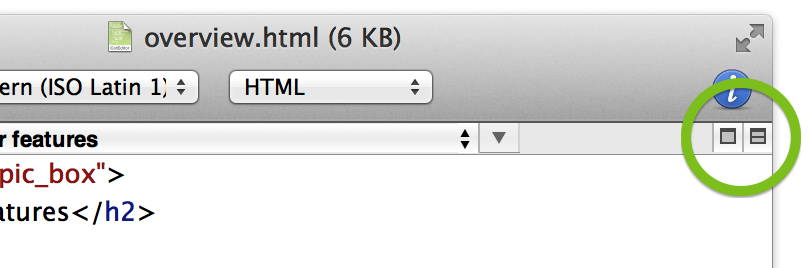

Splitting a document window
Splitting a document window
To split a document window into multiple panes, choose View > Split View, or, click the icon on the right edge of the navigation bar.
To close a split view, choose View > Close Split View, or, click the second icon from the right edge of the navigation bar.
